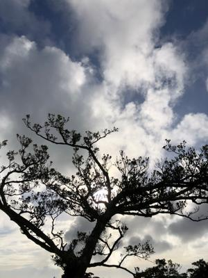

うるがいの話 ある日
最新: パソコン保証【うるがいの話 ある日】とは 一日だけのプログです
『うるがいの話』の最新一日だけのプログで、通信料が少なく経済的だ。カニの画像をクリックすると全ての日付が載る『うるがいの話』サイトを表示します
|
|
【うるがいの話】 うるがい(ｳﾙｶﾞｲ urugai)とは、『もずくがに』の名前でとても大きくなります。 |
|---|---|
|
|
【カミマヤーの話】 猫のことを方言でマヤーといいます。カミマヤー（kamimayaa）とは、神の猫のことです。 |
|
【たながぁの音楽】 たながぁ（ﾀﾅｶﾞｰ tanagaa）とは手長えびのことで、何種類かあり大きいのは車 エビぐらいになります。 |

|
【ぶながぁの話】 ぶながぁ(ﾌﾞﾅｶﾞｰ bunagaa)とは、赤い髪の毛、赤い身体、そして身長は１ｍ２０ｃｍ ぐらい、川の蟹を食べているの目撃された。場所は沖縄県国頭郡大宜味村のと ある村僕の隣近所に住んでいる爺さんから、聞いた話です。 |
|
|
【ギーマの話】 ギーマ(giima)とは、山原の里山に咲くスズランに似た、 花を付けます。実は食べられます、 気が付くと口の周りが紫になっています。 |
2022年07月20日 (水）パソコン保証
16:46

先週、子供がパソコンの修理は今月には終わる？と尋ねたので、もしかしたら
来月までかかるかもと答えると、エクセルの資格を取りたいので早めの方がい
いと言い始める。ん！、使わないので急がないと言っていたのにとムットした
ただ、先週の月曜日に修理センターと電話しているので、恐らく終わっている
筈と答える。休みが明けた昨日、修理センターに直接確認することにした、「
先週パスワードを伝言したあと、そちらから連絡がないので問題がなかったの
か確認したく電話しました」と、『はい、大丈夫です、修理は完了し、あと２
日から３日で店舗に届くはずです』、ホッとする。すぐさまに、子供に来週に
は取れるとメールした。 夕方、ジョギング中にヤマダ電機から処理が終わり
ましたので店舗に取りに来てくださいと連絡があった。お！、修理センターは
サバを読んで報告している。今日、引き取りに行くと『メイン基板の交換なの
でディスクが消去されて、新品の状態です、アカウントの登録から始まり、Ｏ
ＦＦＩＣＥ製品は再度マイクロソフトからダウンロードしてセットアップして
下さい、』、と言われる。ん、一応ディスクが消えることは覚悟してと言われ
たが、再セットアップとは気が重たくなった。家に帰り、ノートパソコンに電
源を入れるとなんと、ディスクは初期化されておらず、スンナリ子供のパスワ
ードを使って起動した。突如、気が軽くなる、修理費は保証で無償。因みに保
証なしの場合だと、メイン基板の交換だと５万程のようだ。
１６時３９分 ビットコインの総資産 ￥９、４１１↑